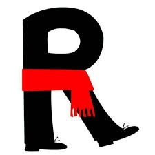
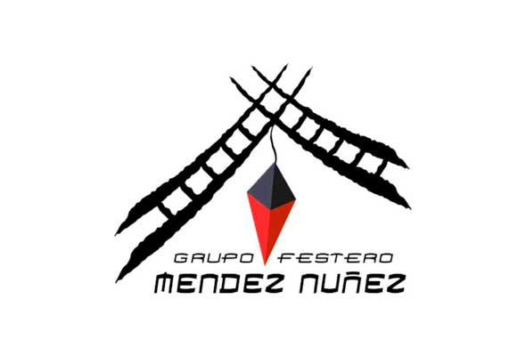
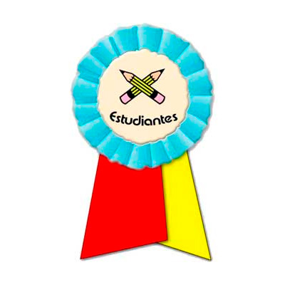
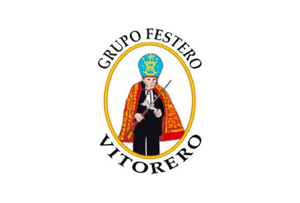
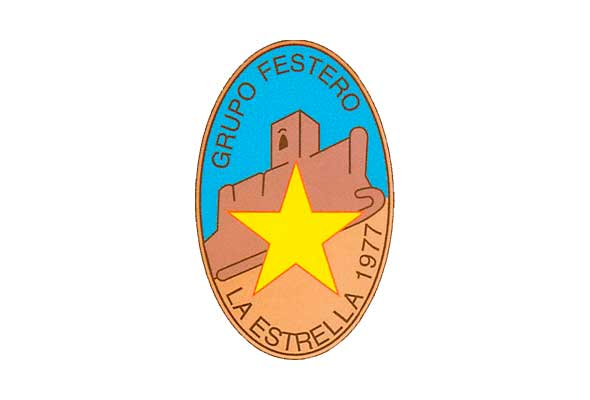
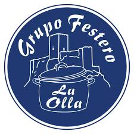
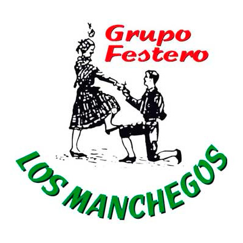

Virgen del Pilar
La sede de este grupo festero se encuentra en la calle Ramón y Cajal, Nº4.
Rincón
La sede de este grupo festero se encuentra en la calle Ramón y Cajal, Nº9.
Méndez Núñez
La sede de este grupo festero se encuentra en la calle Pérez Galdós, Nº5.
Santa Lucía - Estudiantes
La sede de este grupo festero se encuentra en la calle Santa Lucía, Nº5.
Vitorero
La sede de este grupo festero se encuentra en la calle José Echegaray, Nº8.
La Estrella
La sede de este grupo festero se encuentra en el Paseo las Huertas, Nº8D.
La Olla
La sede de este grupo festero se encuentra en la calle de Aragón, Nº21.
Boinas Negras
La sede de este grupo festero se encuentra en la calle Pedro Leal, Nº21.
Los Manchegos
La sede de este grupo festero se encuentra en la calle Maestro Justo Mas, Nº3.